Here are descriptions of some of the more interesting or significant changes made to the Eclipse Platform for the Oxygen (4.7) release of Eclipse.
Plug-in developers will also be interested in the corresponding What's new document in the plug-in developer's guide.
We also recommend to read the Tips and Tricks.
Editors |
|
| An easily-extensible Generic Text Editor added | A new extensible Generic Editor has been added which makes it easier to implement an editor for new languages or new content types. It reuses the existing Eclipse editor infrastructure. The generic editor can be extended using extension points instead of implementing an editor to supply required functionality. |
| Generic editor can now read patch and diff files |
An extension was provided to the generic editor so that it now can provide syntax highlighting for files with the .patch
or .diff extension. Right-click the file and choose Open with > Generic Text Editor to see the editor in action.
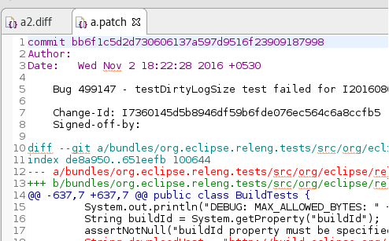 |
| Images are opened in the Eclipse IDE |
Image files are now opened directly in Eclipse by default.
The Internal Web Browser has been registered as default editor for files with the png, jpg, jpeg, gif, bmp, and ico extensions.
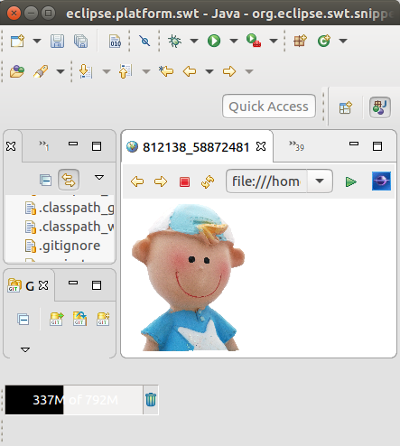 Use Open With > System Editor to open files in the default external program. |
| Editor selection dialog: Use for all |
The Editor Selection dialog now offers a one-click option for choosing the editor that
should open all files with the same extension in the future.
Example when selecting "file.xyz" and choosing Open with > Other...: 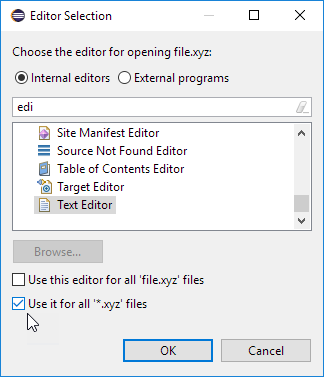 |
| Show Annotation renamed to Show Revision Information |
For files checked out from CVS, the Show Annotation command in the text editor's vertical ruler and in the Team menu
has been renamed to Show Revision Information.
This change has been synchronized with the Eclipse Git team provider, so future versions of EGit will use the same name. |
| Configure left and right sides in Compare editors |
Compare editors now offer a button Swap Left and Right View.
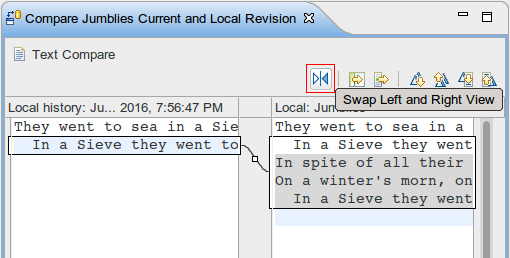 The direction of comparison is preserved between invocations of the Compare editor and can also be changed in the Compare/Patch preference page. 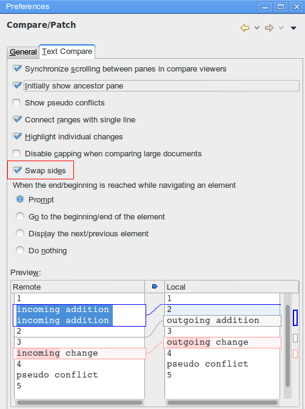 |
| Ctrl+E command improvements |
You can use the Quick Switch Editor (Ctrl+E) command to list and filter all the open editors.
This works now also if you have selected a view in the editor area.
You can filter the list using wildcards, and select editors using mouse or keyboard.
Now you can also cycle through the list by pressing Ctrl+E again. Or use Arrow Up/Down as before. 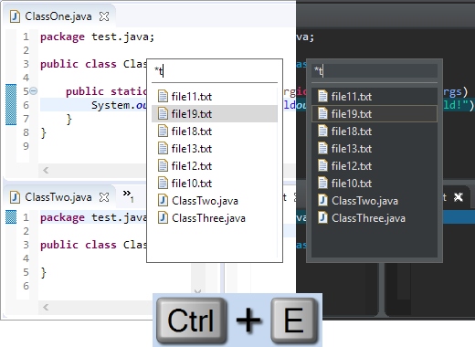 |
| Content Assist for Feature Name in Model Editor |
You can now use Ctrl+Space to trigger content assist when selecting the Feature Name in the Model Editor.
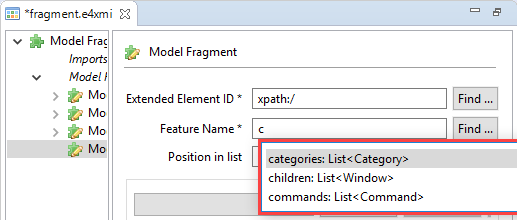 |
| Model Editor improvements |
The elements proposed in the Add child menu are now filtered to a minimal list containing allowed elements only.
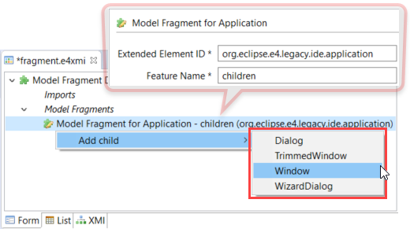 |
Debug |
|
| "Launch Group" launch configuration type |
The new Launch Group launch configuration type allows you to launch multiple other launch configurations
sequentially, with configurable actions after launching each group member:
New launch groups can be created via the Run > Run Configurations... or Run > Debug Configurations... dialogs. |
| "Terminate and Relaunch" from Run menu, context menu and tool bar |
A Terminate and Relaunch option is now available while launching from Run menu, context menu and tool bar.
The default setting is to launch without terminating previous launches. To enable automatic termination,
select the option Terminate and Relaunch while launching on
Preferences > Run/Debug > Launching.
The behavior not selected on the preference page can also be activated on-demand by holding the Shift key while launching the configuration from history. 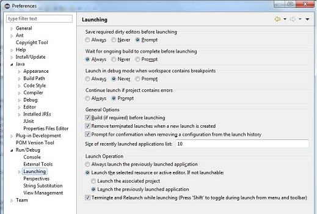 |
| Breakpoints view: Sort By > Creation Time |
In the Breakpoints view's view menu, a new Sort By option has been added.
This allows sorting by two ways:
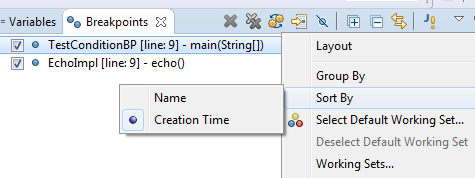 |
| Breakpoints in Overview Ruler |
Breakpoints are now visible in the Overview Ruler by default.
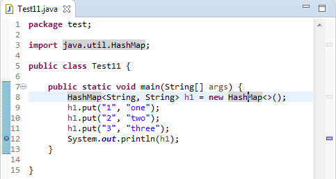 To configure the rendering of annotations, right-click the overview ruler and choose Preferences.... This directly opens the preference page General > Editors > Text Editors > Annotations. |
Views, Dialogs and Toolbar |
|
| Improved string matching in Quick Access |
You can now search for partial descriptions in Quick Access (Ctrl+3).
The search result matches space-separated words in the search string.
For example, searching for "clone repo",
will match the "Clone a Git Repository" command.
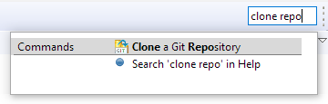 The improved string matching works also in case of parenthesis, or when the search string matches the category name.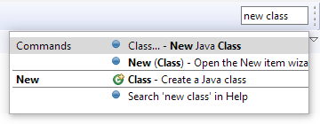 |
| Wildcards in Quick Access |
You can now use * and ? as wildcards to filter Quick Access (Ctrl+3) items.
The match ranges are displayed in bold.
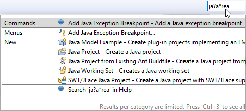 |
| Quick Access search text in Help |
You can now Search in Help after you've entered text in the Quick Access dialog.
The option is shown when the filter text is longer than three characters,
and it is always added at the end of the results.
Search in Help using the new Quick Access dialog: 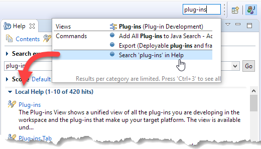 Search in Help using the standalone dialog: 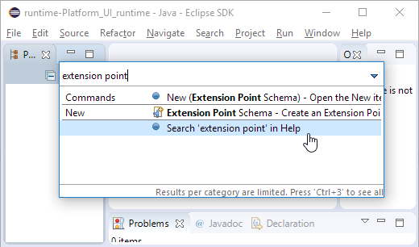 |
| Filter previous choices in Quick Access |
The Quick Access (Ctrl+3) result list does not show duplicate elements anymore.
Now, if a search result element is already in the "Previous Choices" category,
it is no longer shown in another category.
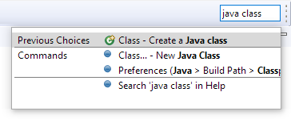 |
| Command icons shown in Quick Access |
Quick Access (Ctrl+3) now shows the icon for a Command if available.
Otherwise, it still shows the default blue ball.
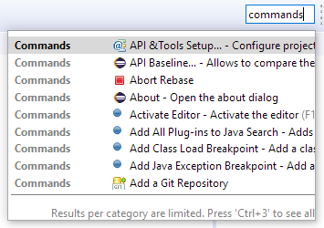 |
| Show/hide Status Bar |
You can now hide and show the bottom status bar via menu:
Window > Appearance > Hide (Show) Status Bar.
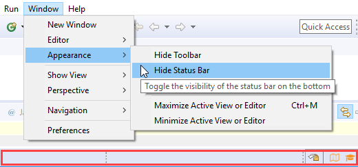 In Quick Access, the command is called Toggle Statusbar. |
| GTK tree collapse/expand key bindings | On GTK+ 3.6 and later, the Left and Right arrow keys now collapse and expand the current tree item (in addition to the GTK+ default -/+ key bindings). |
| Simplified filters dialog for Problems, Bookmarks, and Tasks views |
The Filters dialog of the Problems, Bookmarks, and Tasks views has been simplified.
If you select several configurations, items matching any of these configurations will be shown.
Old dialog in Problems view: 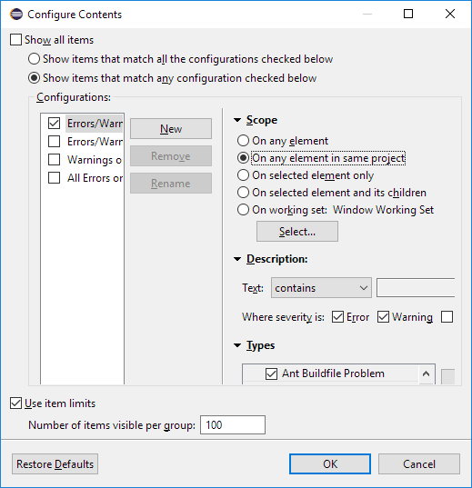 New dialog in Problems view: 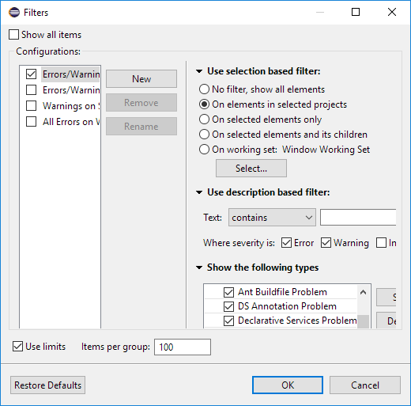 |
| Copy Details submenu for Problems and Tasks views |
You can copy the description or the resource qualified name of an error, warning, or task into the clipboard using commands in the Copy Details context menu.
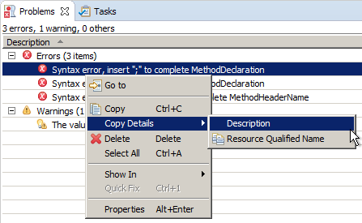 |
| Filter dialog for Problems, Bookmarks, and Tasks views easier to reach |
The Filters dialog is now accessible from the toolbar of the Problems, Bookmarks, and Tasks views.
Previously, it was only accessible via view menu > Configure Contents...: 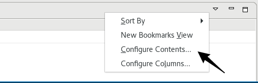 Now also as a toolbar button: 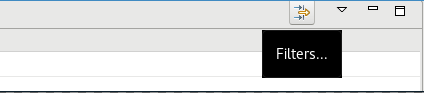 |
| "Copy Build Id Information" in About dialog |
In the About dialog, you can use the context menu to copy
information about your Eclipse installation.
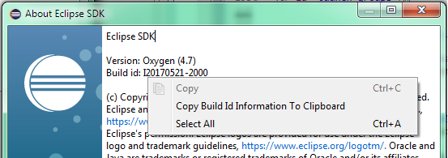 The Copy Build Id Information to Clipboard command copies the product name, version, build id, OS, windowing system, and additional OS-specific info like the GTK or WebKit versions.The command can also be invoked via Quick Access Quick Access (Ctrl+3). |
| 'Filters and Customization...' in Project Explorer |
The Customize View... command in the Project Explorer's view menu has been
renamed to Filters and Customization...
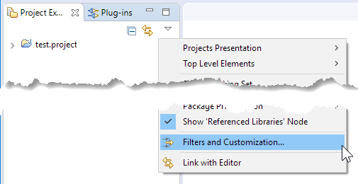 |
| "Recently used filters" feature in Project Explorer |
The Project Explorer view now has a Recent Filters menu that shows the most recently used filters.
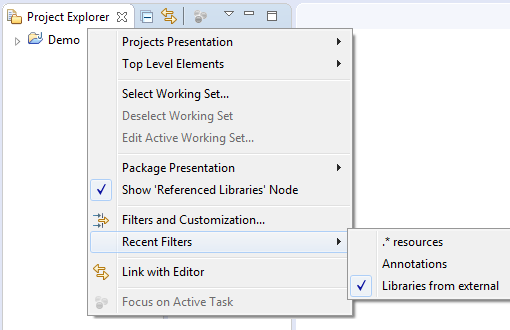 |
| "Other Projects" working set in Project Explorer |
If you're using the Project Explorer and working sets as top-level elements, the Top Level Elements view
menu now provides a way to show an Other Projects group for projects that are not in one of the currently active working sets.
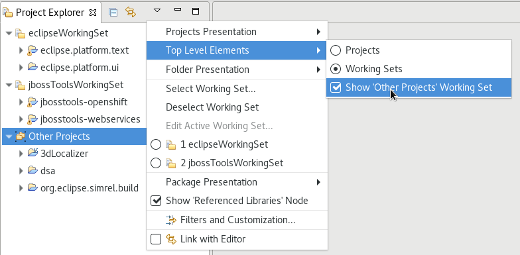 |
| Perspective descriptions in Open Perspective dialog |
You can now see the description for a perspective (if provided by the contributing plug-in) by pressing F2 in the Open Perspective dialog.
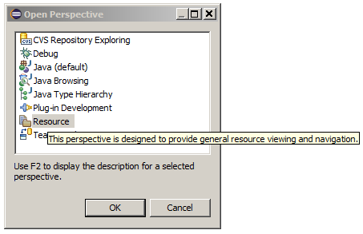 |
| Maximize and Minimize via Window > Appearance menu | The Maximize and Minimize Active View or Editor menu items have been moved to the Window > Appearance menu. They used to be in the Window > Navigate menu. |
| 'Switch Workspace' and 'Restart' menu items |
The Switch Workspace and Restart menu items are now at the bottom of the File menu:
just above the Exit item on Windows and Linux, and as last menu items on the Mac.
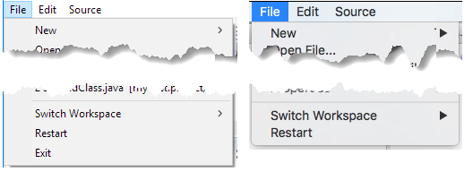 |
| Improved exit and restart dialogs |
The exit and restart dialogs now use verbs instead of OK/No/Yes, which makes the dialogs more direct and specific.
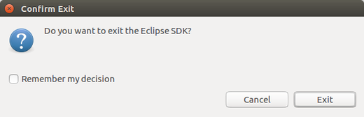 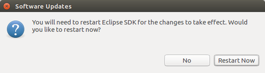 |
| Installation Details menu entry removed | The Help > Installation Details menu entry has been removed. You can access this dialog via Help > About > Installation Details or via Quick Access (Ctrl+3) and then typing "Installation Details". |
| DnD source image for List widget (GTK only) |
When items are being dragged from a List widget, their content now moves with the mouse cursor.
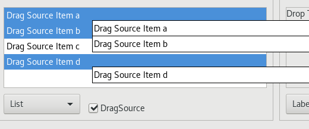 |
Preferences |
|
| Window title configuration |
The title window is now simpler and you can configure it from Preferences.
By default the title displays workspace name, editor path and product name.
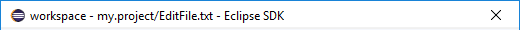 You can now use Preferences > Workspace to choose what to display in the window title: workspace name, perspective name, workspace path, and product name. 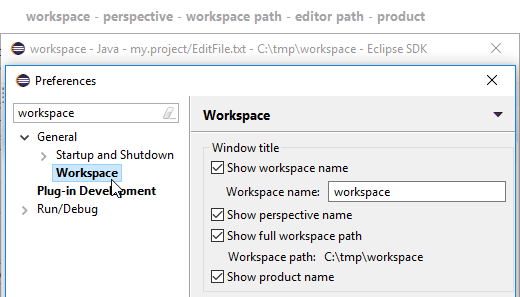 |
| Option to copy your preferences during workspace switch |
You can now copy your preferences during a switch to a new or existing workspace.
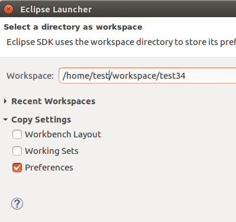 |
| Option to disable Problems view decoration on startup |
By default, the Problems view icon no longer shows an errors/warnings overlay after startup,
unless the Problems view is on top of the view stack.
To enable the errors/warnings overlay also if the Problems view is minimized or not on top,
a new Show Problems view decorations on startup option has been added to
Preferences > General > Startup and Shutdown.
By default, this preference is disabled.
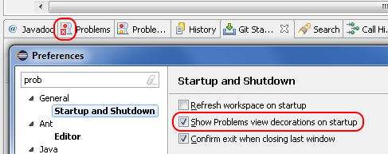 |
| "Always run in background" enabled by default | The Always run in background preference is now enabled by default. If you prefer to see a progress dialog for long-running operations, you can disable this option on the General preference page. |
| External browsers on Linux |
On Linux, the list of recognized external browsers has been updated to include:
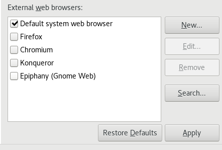 |
Themes and Styling |
|
| New default styling for form-based user interfaces |
The default styling for form-based user interfaces was changed to use a flat, gray style.
This change was inspired by the popular "Clean Sheet" plug-in.
Below you see screenshots of the MANIFEST.MF editor and the Git Staging view in this new design.
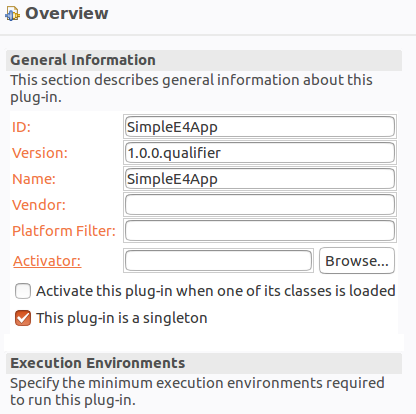 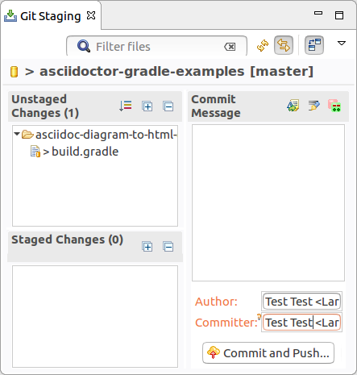 |
| Support for extending existing CSS preference nodes |
CSS definitions for preferences can now use pseudo selectors.
This allows that other plug-ins extend preference CSS nodes, instead of overriding them.
This makes the default Eclipse dark theme much more consistent and usable.
Example styling with EGit installed before this development: 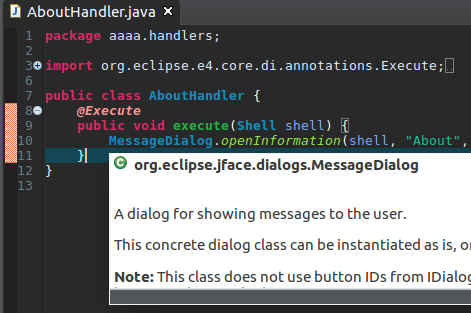 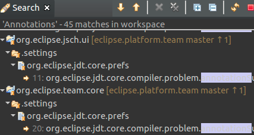 Example styling with EGit installed after this development: 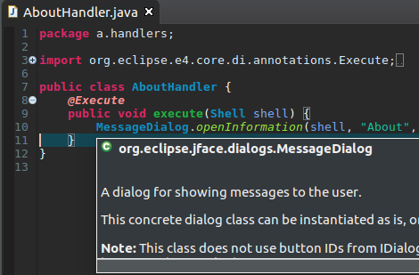 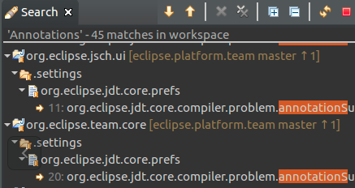 |
| Default styling for table and tree headers |
The Eclipse default dark theme includes styling for the table and tree headers on all supported platforms.
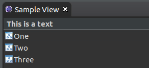 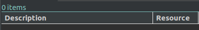 |
| Colors in interactive popups |
Interactive popups like JDT's Quick Outline don't use the platform's
tooltip colors any more, since those were sometimes hard to read.
Old style: 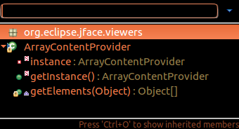 New style: 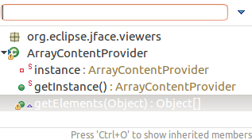 |
| Consistent heap status colors under Linux |
The heap status had poor contrast on Linux since GTK3.04.
This has been resolved for the heap status to look consistent across all platforms.
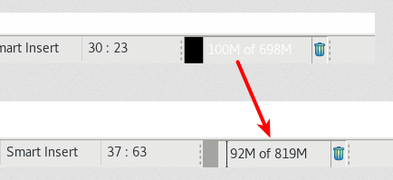 |
| Fixed Progress view colors for the dark theme |
The Progress view has been adjusted for the Eclipse dark theme.
Before:
After:
|
| Improved default styling for the toolbar |
The styling of the window toolbar has been improved.
On Windows, the toolbar color is now consistent with the color of the perspective switcher.
On Linux and Mac, the separator line was removed, which gives you a few more pixels on Linux and removes a yellow line on the Mac.
|
| Reduced TabItems padding under GTK+ |
On GTK+ 3.20 and later, the padding around TabItems has been reduced.
|
| Reduced window margins |
The window margins have been reduced to provide more space in the IDE.
Old style:
New style (see the reduced space below the Quick Access box).
|
| GTK theme system property |
SWT now stores the GTK theme used at launch time in a system property, org.eclipse.swt.internal.gtk.theme.
This property can help with troubleshooting issues that are specific to certain themes.
It can be viewed in About > Installation Details > Configuration.
|
| More high resolution images |
More images in the old GIF format were replaced by images in the PNG format. In addition, high resolution images where added.
As PNG can handle transparency much better than GIF, the ugly white borders around shapes visible in the dark theme are now gone for these icons. To see their full beauty, a high-DPI monitor (e.g. a Retina Mac) is needed. The lower part of the screenshot shows the wizard banner image of the Import dialog in high resolution.
The right part of the screenshot shows all the icons in high resolution.
|
General Updates |
|
| Eclipse as Apple disk image | Eclipse SDK and Eclipse Platform Runtime products are now delivered as signed Apple disk images(dmg) on Mac OSX. |
| Ant 1.10.1 | Eclipse has adopted Ant version 1.10.1. |
| Dropped support for Unix platforms |
Eclipse has dropped support for the following Unix based platforms: AIX, Solaris, HP-UX, s390, s390x and ppc32.
No builds are available on the eclipse.org downloads page for these platforms.
For more information, please read the announcement made by the Eclipse PMC. For the Photon (4.8) release, we plan to drop support for the ppc64 as well, but continue to support ppc64le. |